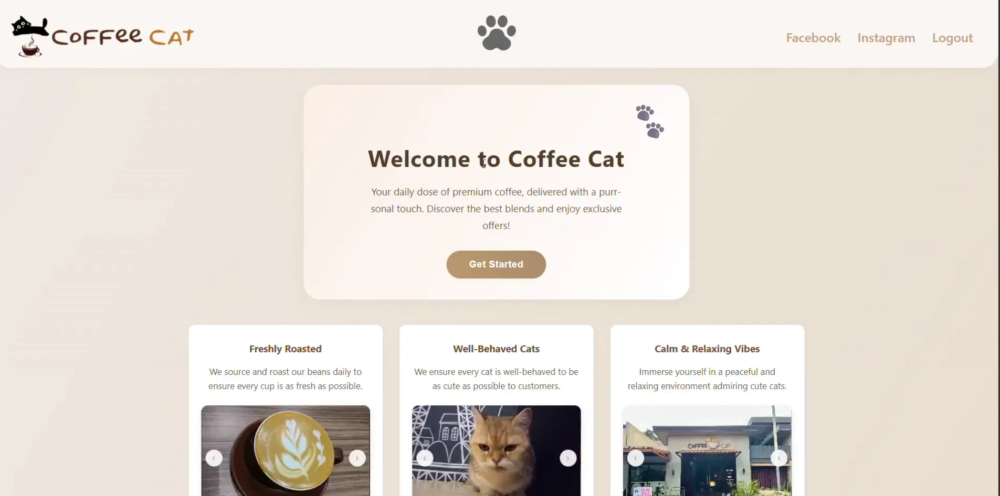
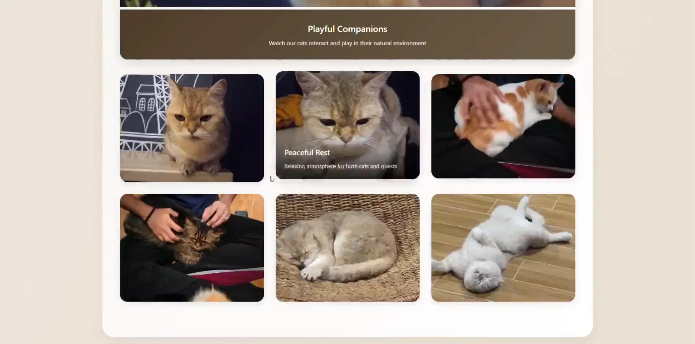
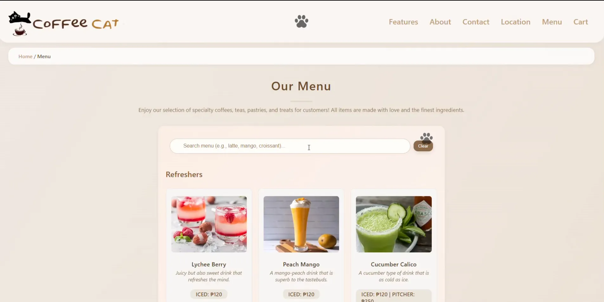
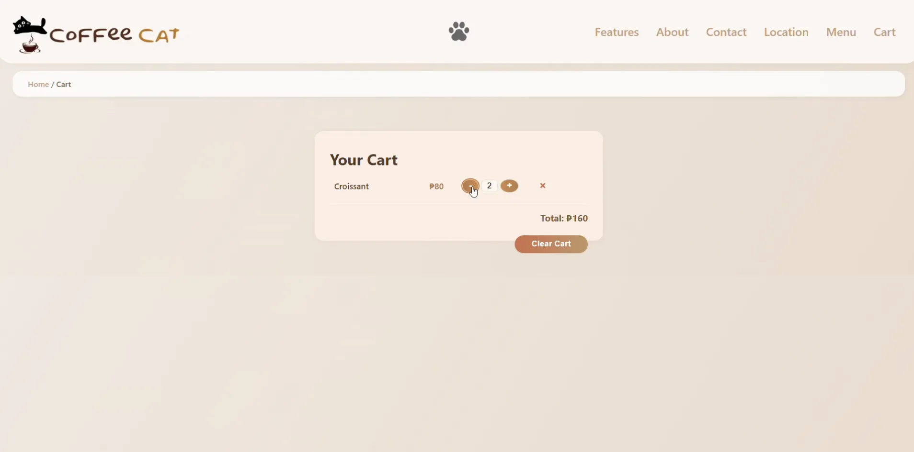

Interactive website for a coffee shop with menu, gallery, and customer feedback forms.
Walkthrough Jump to a feature in the demo




Creating a digital home for Coffee Cat Cafe, a hidden cafe that features cats as its main attraction. The project focuses on introducing and enhancing the cafe's popularity in the internet, this also allows feline enthusiasts to meet the adorable cats, view cat profiles, and explore a specialized menu in a relaxing environment.